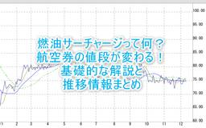

直近1週間の人気フィード
はてなブックマーク数を元に新着優先で並べ替え


人間のように自然に話せるという音声対話モデル「Haru 4B」無償公開 3
3
 PC Watch
PC Watch
人間のように自然な発声ができ、相槌や割り込みにも対応できる音声対話モデル「Haru 4B」が登場した。higurashiが11月13日に発表したもので、事前学習済みベースモデルのオープンウェイト(モデルの重み)をApache License 2.0のもとでHugging Faceにて無償公開した。推論コードもGitHubで公開している。
1日前

RadeonドライバのSSD過剰書き込みの不具合が修正される 3 PC Watch
AMDは11月12日(米国時間)、Radeon用のオプションドライバ「AMD Software: Adrenalin Edition 26.11.1」をリリースした。
1日前

Google、安くて速い「Gemini 4 Hydrogen」。AI指標はArgon上回る 3 PC Watch
Gemini 4世代に、速さと安さを売りにしたモデルが加わった。Googleは11月12日(現地時間)、AIモデル「Gemini 4 Hydrogen」を発表し、同日から開発者、企業、一般ユーザー向けに順次提供開始した。Gemini APIの有料枠での価格は、100万トークンあたり入力が1.5ドル(約240円、1ドル=約160円)、出力が7.5ドル(約1,200円)。無料枠でもレート制限付きで利用できるほか、Geminiアプリでも提供され、無料ユーザーはプロンプトに対してGemini 4 Hydrogenが適切だと自動で判断された場合に使われる。
1日前
2026年11月最新版！JAL陸マイラーの年間17万JALマイルの貯め方の全て！誰でも出来る方法から裏ワザ完全ガイド！！ 5 平均年収陸マイラーの毎年家族で海外旅行
2026年最新！JALマイルを大量に貯める裏ワザ！陸マイラーが年間17万JALマイルの貯め方の方法、初心者でも誰でも出来る方法から裏ワザテクニックまで完全解説！！ JALマイルの貯め方が知りたい！ 陸マイラーのJALマイ…
5日前
2026年11月最新！陸マイラーのANAマイルの貯め方と裏ワザ！年間20万ANAマイルを貯める全ての方法を紹介！ 4 平均年収陸マイラーの毎年家族で海外旅行
2026年11月最新！陸マイラーのANAマイルの貯め方と裏ワザ！年間20万ANAマイルを貯める方法を大公開！ ANAマイルの貯め方が知りたい！ ANA陸マイラーがやってるANAマイルを大量に貯める裏ワザが知りたい！ この…
5日前

2026年11月最新のANA、JALの燃油サーチャージの推移まとめ。値上げ、値下げの料金の仕組みを解説 4 平均年収陸マイラーの毎年家族で海外旅行
2026年11月最新！ANA、JALの燃油サーチャージの推移まとめ。値上げ、値下げの料金の仕組みを解説 【2026年11月1日追記】 ANA、JALの2026年11月~2026年12月はゾーンS！なんと更に4段階アップ！…
6日前